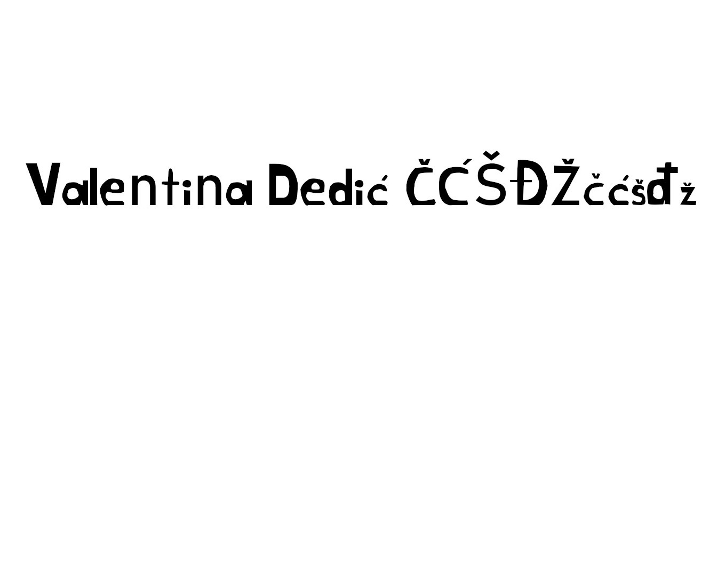
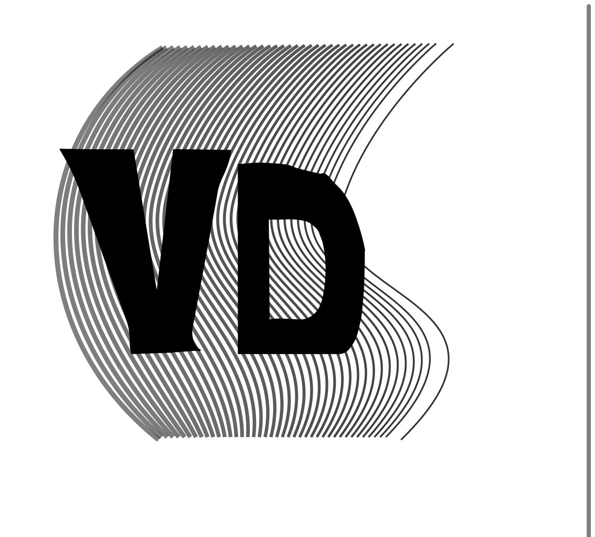
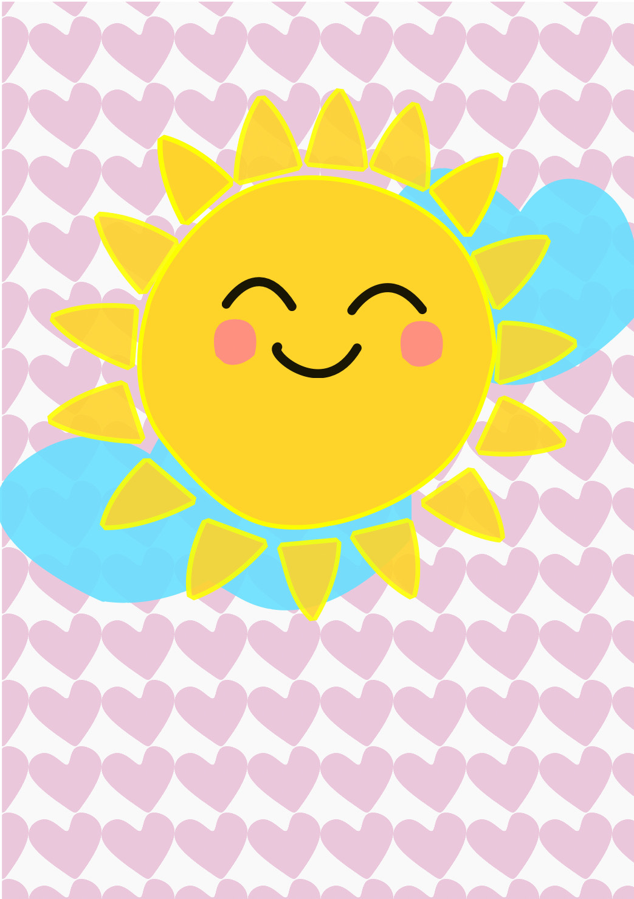
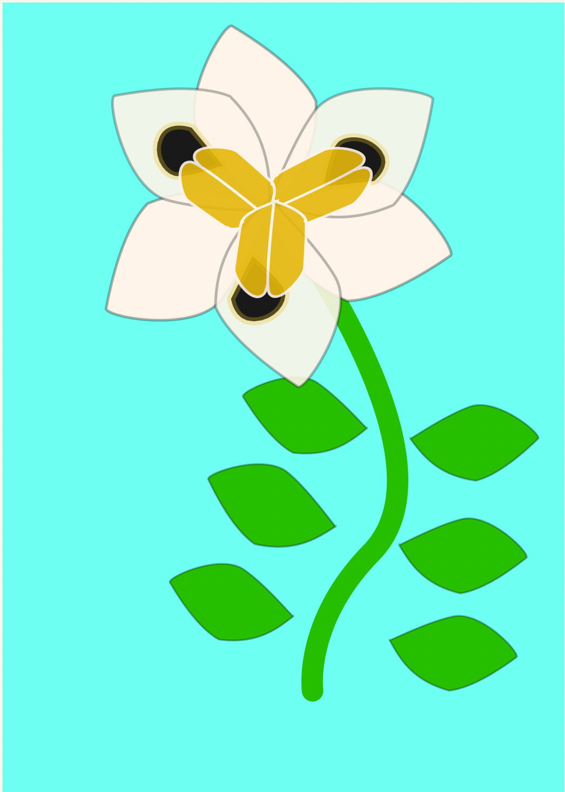
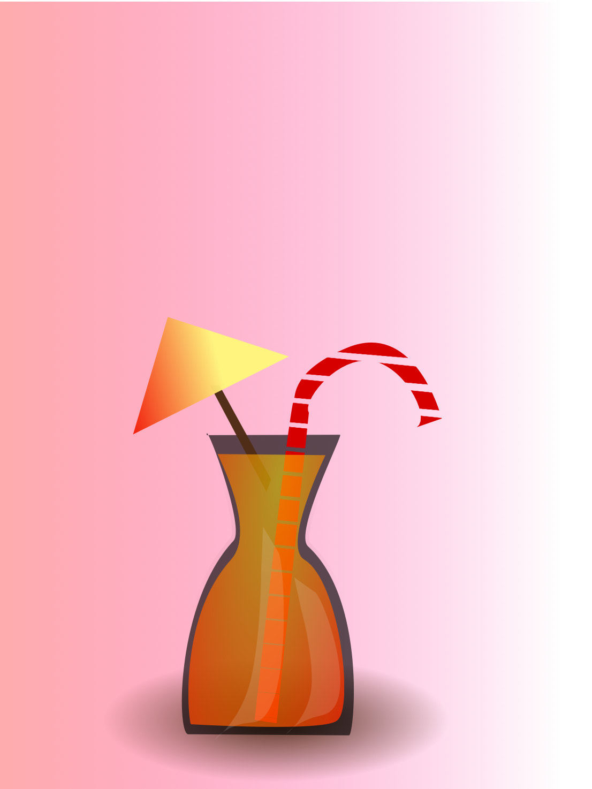
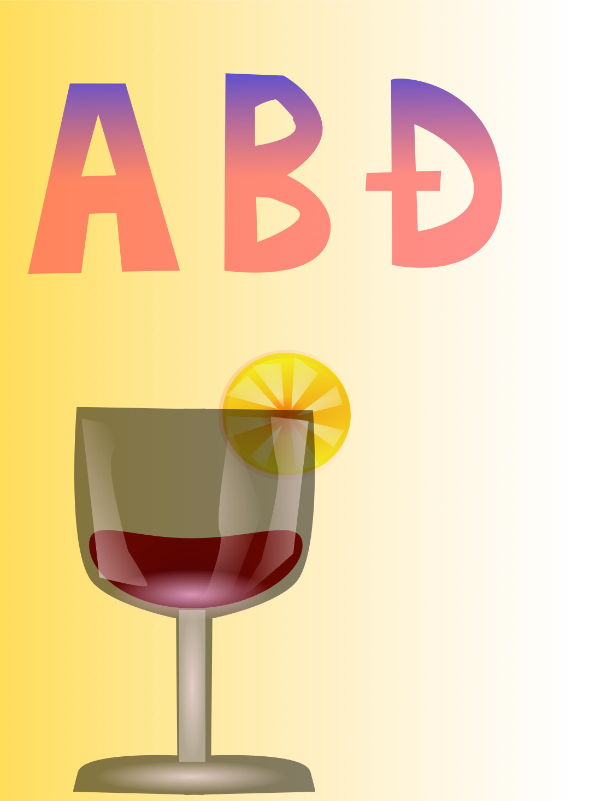
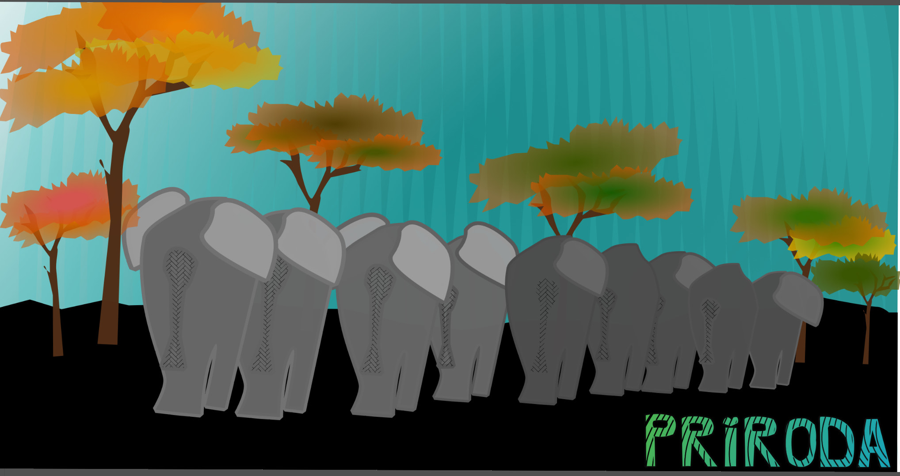
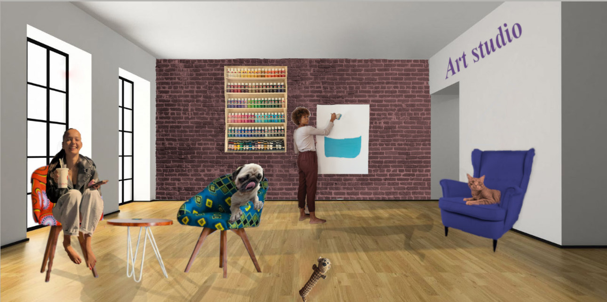

Inkscape






1.VJEŽBA - FontForge (1.slika)
U FontForge smo crtali novi font naših imena.
2.VJEŽBA - Bézier
U programu Inkscape smo uz pomoć Bézierovih krivulja i maski nacrtali svoja imena.
3.VJEŽBA - boje, transformacije, pattern tool
Swatch boje i uz pomoć alata transformacija/rotacije/reflektiranja nacrtali cvijet.Tu je i moj primjer.
4.VJEŽBA -Gradijenti, transparencija
Spajanjem i odvajanjem objekata,te efekte gradijenta kako bismo što realističnije napravili složene objekte.
Tu je i moj primjer.
Projektni zadatak

VEKTORSKA GRAFIKA
Napravila sam svoju ilustraciju. Slonovi koji se kreću i nestaju u daljini.
5. VJEŽBA - retuširanje (1.-2.)
U programu GIMP-uklanjanje manjih pozadinskih šumova zamućivanjem, kloniranjem (popravci manjih područja) te korekciju tonova.
6. VJEŽBA - koloriranje (3.-4.)
Uz pomoć alata i modifikaciju layera naučili smo kako napraviti kolorizaciju putem kanal,iz sive u stvarnost.
7. VJEŽBA - fotomontaža (5.)
Kombiniranjem više fotografija,spajali smo različite elemente drugih slika u jednu.
Realistične sjene-Blending options,korekciju boja/svijetla kako bi slika bila što više realistična te kako izmijeniti perspektivu elemenata.
Projektni zadatak

PIXEL GRAFIKA
Uz sve prijašnje alate selektiranja i korekcije, spojila sam svoje fotografije u realističnu scenu.Art studio, psić i ja.😂